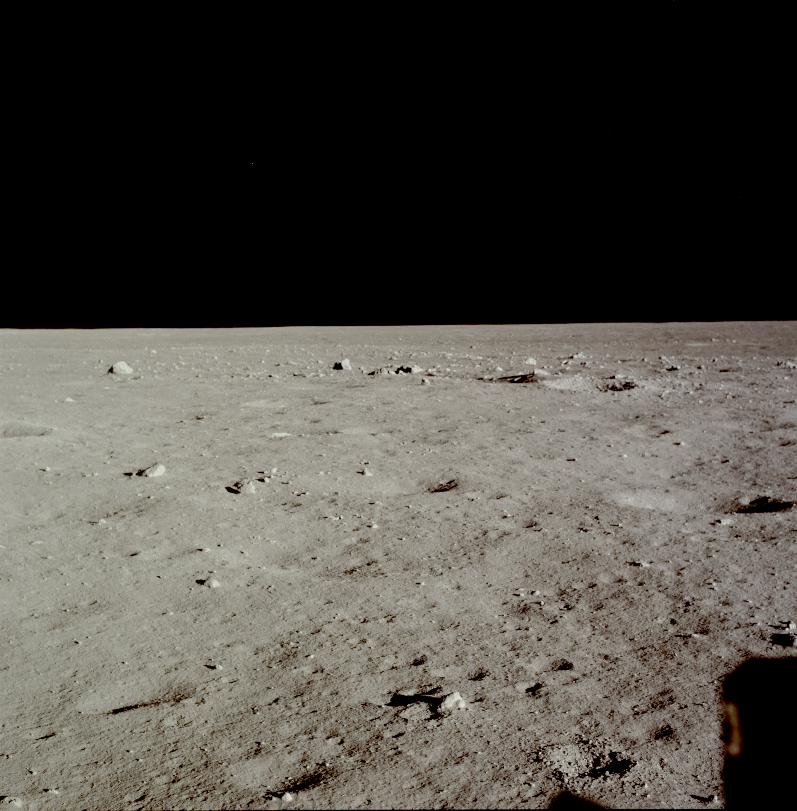

Now the world could only listen and pray as it waited for the landing, which was not televised. The 12 minutes that it took to set the Eagle down on the lunar surface seemed interminable. After getting a go from flight control, Armstrong advanced the throttle until the descent engine reached maximum thrust, which took 26 seconds. Collins had seen the lander through the sextant from as far away as 185 kilometers, but he could not see it fire 220 kilometers ahead of him. Armstrong was not sure at first that the descent engine had ignited, as he neither heard nor felt it firing. But his instrument panel told him everything was in order. At 10-percent throttle, deceleration was not detectable; at 40- to 100-percent, however, there were no doubts. The lander was much more fun to fly than the simulator. Then, five minutes into the maneuver, the crewmen began hearing alarms. On one occasion, the computer told them a switch was in the wrong position, and they corrected it. Another time, they could find no reason for the alarm, but they juggled the switches and the clanging stopped.
Coping with these alarms, some of which were caused by computer overloads, lasted four minutes. Flight control was watching closely and passing on the information that there was no real problem with their vehicle. They could go on to a landing. But these nerve-wracking interruptions had come at a time when the crewmen should have been looking for a suitable spot to sit down, rather than watching cabin displays. They had reached "high gate" in the trajectory - in old aircraft-pilot parlance the beginning of the approach to an airport in a landing path - where the Eagle tilted slightly downward to give them a view of the moon. When they reached "low gate" - the point for making a visual assessment of the landing site to select either automatic or manual control - they were still clearing alarms and watching instruments. By the time they had a chance to look outside, only 600 meters and three minutes' time separated them from the lunar surface.
Armstrong saw the landing site immediately. He also saw that the touchdown would be just short of a large rocky crater with boulders, some as large as five meters in diameter, scattered over a wide area. If he could land just in front of that spot, he thought, they might find the area of some scientific interest. But the thought was fleeting; such a landing would be impossible. So he pitched the lander over and fired the engine with the flight path rather than against it. Flying across the boulder field, Armstrong soon found a relatively smooth area, lying between some sizable craters and another field of boulders.
How was the descent fuel supply? Armstrong asked Aldrin. But the lunar module pilot was too busy watching the computer to answer. Then lunar dust was a problem. Thirty meters above the surface, a semitransparent sheet was kicked up that nearly obscured the surface. The lower they dropped, the worse it was. Armstrong had no trouble telling altitude, as Aldrin was calling out the figures almost meter by meter, but he found judging lateral and downrange speeds difficult. He gauged these measurements as well as he could by picking out large rocks and watching them closely through the lunar dust sheet.
Ten meters above the surface, the lander started slipping to the left and rear. Armstrong, working with the controls, had apparently tilted the lander so the engine was firing against the flight path. With the velocity as low as it was at the time, the lander began to move backward. With no rear window to help him avoid obstacles behind the lander, he could not set the vehicle down and risk landing on the rim of a crater. He was able to shift the angle of the lunar module and stop the backward movement, but he could not eliminate the drift to the left. He was reluctant to slow the descent rate any further, but the figures Aldrin kept ticking off told him they were almost out of fuel. Armstrong was concentrating so hard on flying the lunar module that he was unable to perceive the first touch on the moon nor did he hear Aldrin call out "contact light," when the probes below the footpads brushed the surface. The lander settled gently down, like a helicopter, and Armstrong cut off the engine.
4 days, 6 hours, 45 minutes, 57 seconds. CapCom: We copy you down, Eagle.
Armstrong: Houston, Tranquility Base here. THE EAGLE HAS LANDED.
CapCom: Roger, Tranquility. We copy you on the ground. You got a bunch of guys about to turn blue. We're breathing again. Thanks a lot.
And Armstrong started breathing again, too. He was not pleased with his piloting, but landing on the moon was much trickier than on the earth. He related the maneuver to his past experience in touching down during a ground fog, except that the moon dust had movement and that had interfered with his ability to judge the direction in which his craft was moving. Aldrin thought it "a very smooth touchdown," and said so at the time. They were tilted at an angle of 4.5 degrees from the vertical and turned 13 degrees to the left of the flight path trajectory. Armstrong agreed that their position was satisfactory for lighting angles and visibility. At first, a tan haze surrounded them; then rocks and bumps appeared. Man had landed successfully on the moon - and on his first attempt.9

The view out the window after touchdown - no footprints on the moon. The lunar module's shadow is in the lower right corner.
9. "Apollo 11 Debriefing," 1: 9-1, 9-4, 9-6, 9-17 through 9-28; "Onboard Voice," pp. 175-78; "Apollo 11 Voice," pp. 308, 310, 312-17; Charlesworth et al., "Flight Directors Report," pp. 14-16; Hage memos, 21 and 24 July 1969; "Apollo 11 Mission Report," pp. 1-1, 3-1, 3-2, 4-8, 4-9, 5-4 through 5-6; Floyd V. Bennett, "Mission Planning for Lunar Module Descent and Ascent," Apollo Experience Report, NASA Technical Note S-295 (MSC-04919), review copy, October 1971, pp. 3, 8; Mission Report: Apollo 11, p. 6; Armstrong to JSC History Off., 3 Dec. 1976.